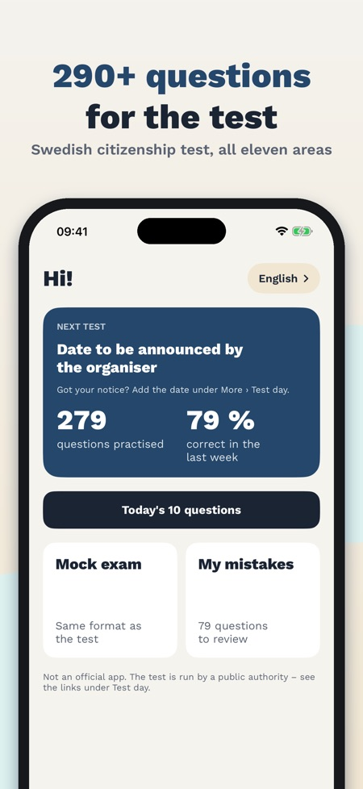
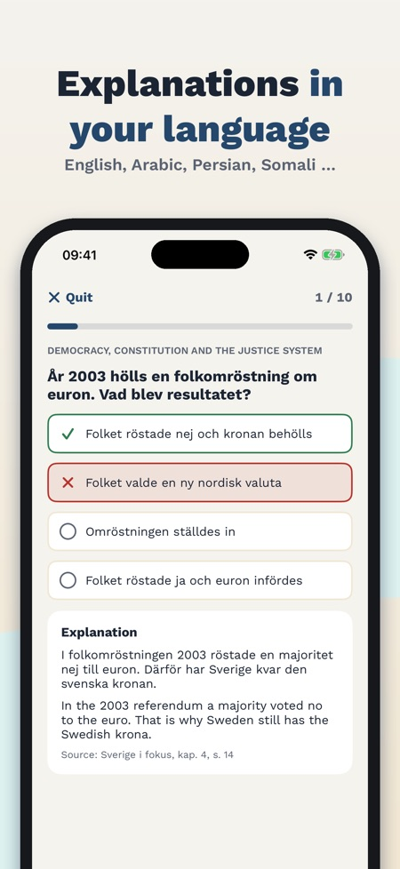
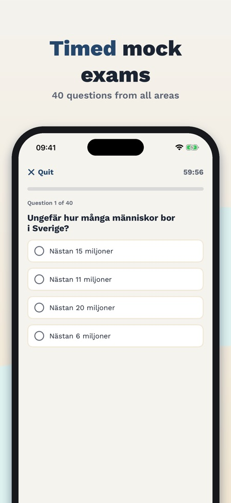

Swedish society exam practice. Over 290 questions in Swedish from all eleven areas, explanations in seven languages incl. Arabic and Somali, and timed mock exams. Works offline.



Prepare for the Swedish citizenship test in civics (medborgarskapsprovet). The questions are in Swedish, just like in the test, and every explanation is also available in English, Arabic, Persian, Somali, Tigrinya and Ukrainian.
ALL ELEVEN SUBJECT AREAS
- Over 290 practice questions written by us, with four options as in the test
- History, traditions, welfare, work and personal finances, climate and environment, democracy and the constitution, rights and freedoms, religion, the role of the media, geography, and the EU and international cooperation
- Every question has an explanation and a reference to the official study material
EXPLANATIONS IN YOUR LANGUAGE
- Question in Swedish, explanation in Swedish and in your language
- Arabic and Persian read right to left
TIMED MOCK EXAMS
- 40 questions from all areas in 60 minutes, the result is shown at the end
- Result by area and a review of your mistakes
- The number of questions, the time and the pass mark of the real test have not been published yet; our mock exam uses its own practice pass mark
MY MISTAKES AND TODAY'S 10 QUESTIONS
- Mistakes are collected and removed after two right answers in a row
- Ten questions a day, the ones you don't know yet first
FLASHCARDS AND SUMMARIES
- 74 flashcards of key Swedish terms such as allemansrätten and offentlighetsprincipen
- A short summary of every area
TEST DAY
- From the letter to the result: registration, ID, what you may bring
- Add your test date and get a reminder one week before
ONE-TIME PURCHASE, NO SUBSCRIPTION
Today's 10 questions and one complete timed mock exam are included without purchase. Full access unlocks all questions, unlimited mock exams, flashcards and summaries. Works offline.
Provklar is an independent app and not official. It has no connection to the Swedish Council for Higher Education, the Swedish Migration Agency or any other authority. The questions are our own, based on facts in the official study material Sverige i fokus. The test itself is only in Swedish.